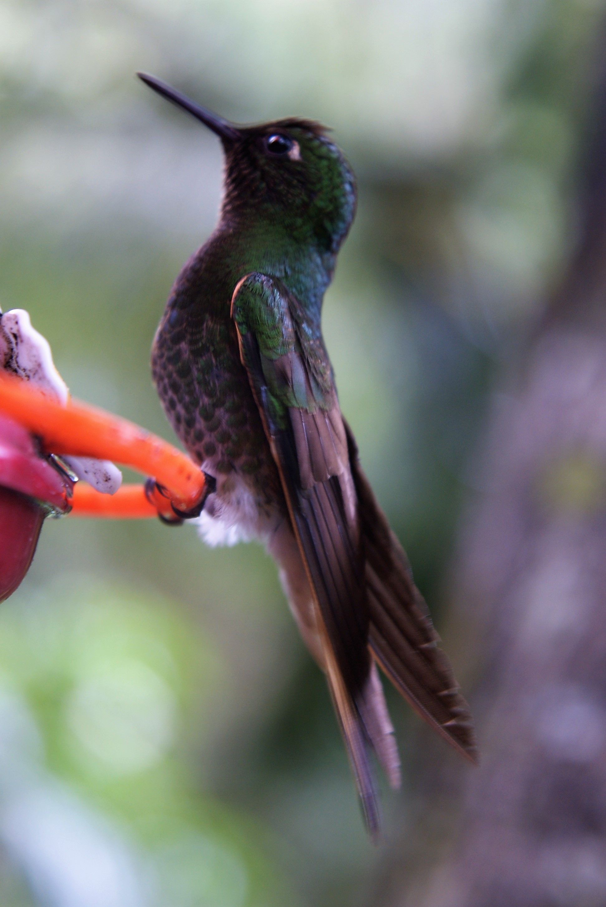
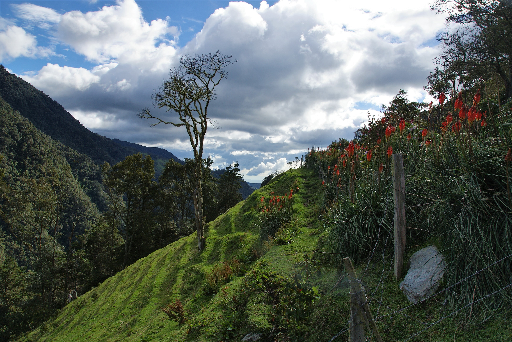
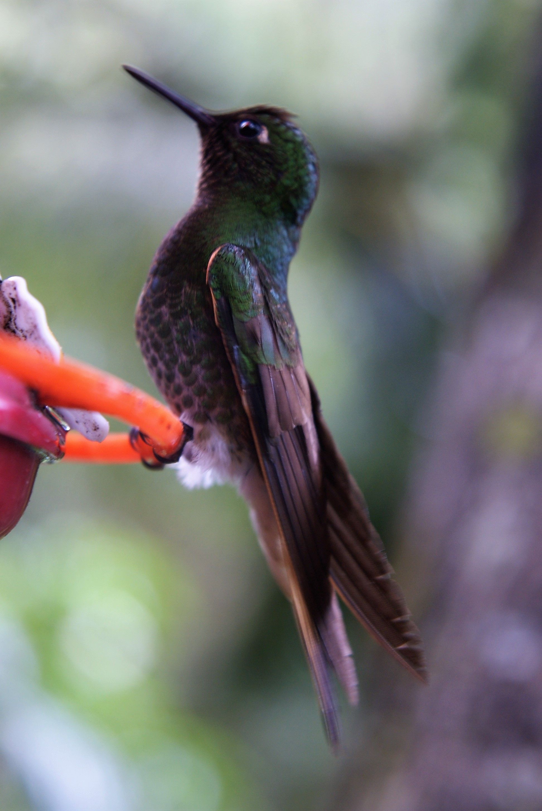
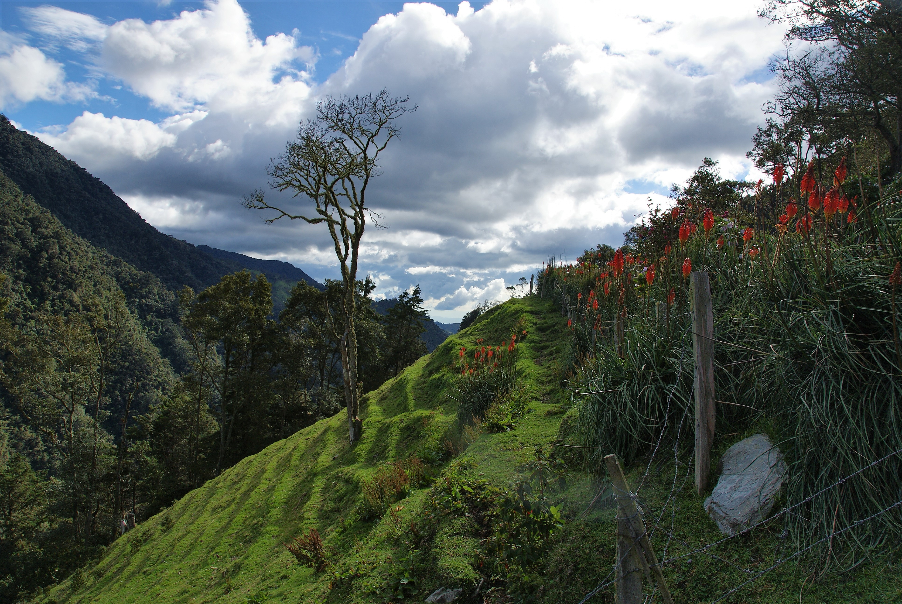

Popayan et Salento
Premiers pas en Colombie
Popayan, une agréable surprise
Après cette désagréable aventure du départ en vacances de mon portable avec une autre personne, nous arrivons à Popayan. Il faut bien savoir que notre capital touristique en Colombie est différent de celui des autres pays. En effet, j'avais une note sur mon téléphone (astucieusement passée sur l'ordi avant le vol, pas folle la guèpe). Et dans cette note, toutes les recommandations touristiques des gens qui y ont fait un tour, et qui l'ont adoré. J'ai cité Adrien, Juju, Brunelle (Laos) puis tous les voyageurs en Amérique du sud, qui avaient un conseil à donner.
Popayan n'était pas franchement dans notre check list, mais comme c'était une ville sur le chemin, et qu'elle nous coupait la route, on s'était dit allons-y ! Grand bien nous fasse, c'est vraiment sympa. Il n'y a pas des masses de touristes, la ville est très blanche et il fait bon y vivre.
Petit point culture : Popayan est une des deux villes de Colombie (avec Carthagène) reconnue pour son architecture. Son passé colonial côtoie son dynamisme actuel et en font une ville très agréable. Elle est idéalement située, carrefour entre l'Equateur et le reste de la Colombie, notamment la côte Caraïbes. C'est une ville extrèmement religieuse, et ses processions de la semaine sainte ont été inscrites au patrimoine culturel immatériel de l'humanité en 2009. Enfin, c'est la seule ville d'Amérique du sud à avoir reçu le titre de ville gastronomique par l'Unesco en 2005. Un sacré programme !
Le premier jour, petit tour de la ville tranquille, pour s'imprégner de l'ambiance de la ville. On visite les monuments, on arpente les rues, on boit des cafés en terrasse ce qui nous permet d'avoir des conversations avec des habitants qui nous racontent leur vie d'avant, celle de maintenant et ce qu'ils peuvent ou pas dire dans l'espace public. Vivre lentement nous permet ce type de papotage avec les gens qui voient que tu n'es pas là pour speeder et enchainer les attractions touristiques. Le problème reste que l'échange est compliqué. Je trouve que les Colombiens ont un accent, des expressions et des tournures de phrases que je ne comprend plus si bien. Moi qui me sentais à l'aise Blaise, c'est la fin des haricots. Je leur fait répèter plusieurs phrases, et la musique de cette nouvelle langue rentre progressivement.
On fait égalementt un petit point de vue, et un musée, où on apprend le parcours de Guillermo Valencia, poète et homme politique, et surtout sa fille Josefina Valencia de Hubach, première ministre femme et gouverneuse en Colombie.
Enfin, Popayan est également la capitale de la gastronomie, il parait, alors on s'essaie aux spécialités locales. Au programme :
-
Du Salpicon payanes, une boisson fraiche mélange de mûres et lulo (un fruit excellent, qui se rapprocherait du kiwi dans le goût), avec des morceaux de guabanaba.
-
Des emapanadas, mais pas n'importe lesquelles, les emapanaditas de pipian. On les trempe dans une sauve aux cacahouètes et c'est délicieux !
-
Enfin, les carantantas con hogao, qui sont de grandes chips de maïs à tremper dans de la sauce tomates oignons, également savoureux.
Le lendemain, on se fait le traditionnel free walking tour. C'est toujours aussi chouette de découvrir des détails innaccessibles sinon. Et les guides sont toujours aussi enthousiastes de nous faire découvrir les particularités de leur ville.
Déja, il est l'heure de partir pour Salento, la ville aux palmiers géants.
Salento, de la couleur, des colibirs et des palmiers.
On arrive à Salento, et c'est le changement d'ambiance. Les bâtiments blancs d'influence européene de Popayan sont remplacés par les petites maison de maximum deux étages ultra colorées. Salento est de plus très annimé niveau tourisme.
Chaque porte, balcon et charpente du toit est un mélange de plusieurs couleurs qui diffèrent de la maison d'à côté. Au niveau structurel, le village est construit exactement comme d'habitude. Une place principale qui est en fait un mini parc, l'église d'un côté et la mairie de l'autre. Des Jeep Wilis occupent tout un côté de la place afin d'amener les touristes vers la vallée Cocora et les locaux vers des villages environnants.
On s'installe, et on part à la découverte du village, tranquillement. Petit point de vue sans beaucoup d'intérêt sur le village. Les boutiques d'artisanat pullulent et font toutes plus envie les unes que les autres. Les restos à touristes aussi, mais on finit par dénicher un almuerzo dans un super petit resto local. Truite à la plancha, un régal !
La vallée du Cocora
Le lendemain, nous partons à la découverte d'un des élément qui nous amène dans cet endroit : la mythique vallée de Cocora ! Nous prenons donc une Jeep sur la place principale, debout sur le marchepied arrière, et débutons la rando. La boucle passe par plusieurs fermes privées, il faut donc plusieurs fois payer un droit de passage et ne pas aller se ballader n'importe où, propriété privée oblige.
La première partie est assez simple, elle sillone à travers une belle vallée habitée par des vaches normandes. Big up Yoyo ! Puis on s'enfonce dans la jungle en suivant un sentier et divers petits ponts en bois où il faut passer un par un. La végétation assez dense est la bienvenue, d'autant plus qu'il commence à pleuvoir.
La seconde étape est une ferme aux colibris. Ferme, ferme, il faut le dire vite. Tu payes et il y a deux abreuvoirs pour les oiseaux et 45 touristes armés d'un appareil photo autour. Ca ne les empèche pas de venir boire, et on repart tous avec des clichés de fou. Mais bientôt, la pluie devient drue, et on reste plus longtemps, quasi tous les autres touristes sont partis. On rencontre François, un prof suisse très très très roots et voyageur, qui se fait un mois de vacances avant d'avoir une année sabbatique pour voyager. Il a déja bien roulé sa bosse sans trop de soucis et c'est peut être malheureusement ce qui lui a causé une belle mésaventure. Il a voulu sortir d'un terminal de bus d'une ville peu touristique à pied pour aller faire des photos d'un point de vue en fin de journée. Grosse erreur, lui qui mesure 2 mêtres a rencontré deux mecs et leur couteau, qui lui ont piqué son appareil en lui faisant lâcher grâce à l'arme blanche. Il est bien traumatisé, et a le bras dans un bandage. Par contre il nous décrit une grosse perte de sang il y a trois jours avant pendant son agression, et il est maintenant sur un chemin de randonnée... Sans surprise, il fait un malaise pendant la montée. Le filou n'avait pas mangé non plus ce midi. Après avoir cassé la croûte, on ne regrette quand même pas le chemin emprunté, plus physique mais qui nous a donné de très beaux points de vue, et nous profitons à fond des palmiers géants qui peuvent mesurer jusqu'à 80 mêtres de haut.
De retour à notre hôtel, nous rencontrons une famille franco-colombienne avec qui nous échangeons sur tout le retour, puis petit repas et vite au lit. Le lendemain nous recroisons François qui a l'air d'aller mieux, une belle cure de viande lui a fait du bien.
Quand à nous, on se rend dans la vallée du café à pied depuis Salento pour voir les fermes. Une nénétte très sympa nous fera faire le tour de la finca, et on apprend plein de nouvelles choses sur la production de café. Après une petite dégustation avec la troisième personne de notre groupe, on papote de la situation politique de la Colombie.
Et puis il est déja temps de se remettre en mouvement: direction Filandia !
Filandia, autre village coloré, j'ai hâte !
Maïlys
 



 <\div>
<\div>